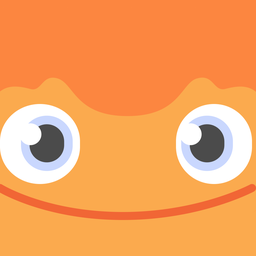

Apoyü
How hard should you go today?
Wear your Apple Watch to sleep tonight. In the morning Apoyü will be waiting with your first card and an honest call for the day. That first morning is on us.
Coming to the App Store.
Some mornings you wake up ready to run through a wall. Some mornings you are Basically Furniture. Apoyü can usually tell which one before you can.
Apoyü is a small fire creature who reads your night from Apple Health and meets you in the morning with the truth. You get your recovery score and a collectible card about the body you brought to breakfast. Then Apoyü makes one honest call for the day: push, hold, ease or rest, with the reason behind it.
How your morning works
Wear your Apple Watch to sleep. When you wake up, Apoyü reads last night on your phone and compares it with your own normal, not a stranger's average.
Every morning arrives in the same order. First your Recovery. Then today's collectible card. Then the Daily Call. Then a short brief in Apoyü's voice. Last comes Today's Nudge, one small thing worth doing before the day is done.
When the night was thin on data, Apoyü tells you so instead of guessing. If a number would only stress you out, you can hide it and keep the card.
Your cards add up to a Collection and a calendar of the mornings you have lived. Rare days make rare cards. Any card you have earned is yours to share.
Membership, in plain words
Your first full morning is on us, start to finish, with no subscription needed.
After that morning, Apoyü Membership keeps the mornings coming. Choose a yearly or a monthly plan. The App Store shows you the price in your own currency before you subscribe. Both plans start with a 14 day free trial for eligible new subscribers.
If you decide not to join, or your membership ends, Apoyü moves into Archive Mode. Everything you have earned stays yours: your cards, your Collection, your past mornings and the ability to share them. Apoyü simply stops making new mornings until you come back.
Honest about what it is
Apoyü is a general wellness app, not a medical device. It is not intended to diagnose, treat, cure or prevent any disease, and nothing in it is medical advice. If something about your health worries you, talk to a doctor.
Your individual readings never leave your phone. Apoyü works out your score on the device. Only the day's results, like your score and a short summary of the night and of each workout, are saved to your private account. The AI services that help write your brief see those daily results and your first name, never your individual readings. See exactly what goes where.
What you need
Requires an iPhone with Apple Health and an Apple Watch worn to sleep. For ages 13 and up.